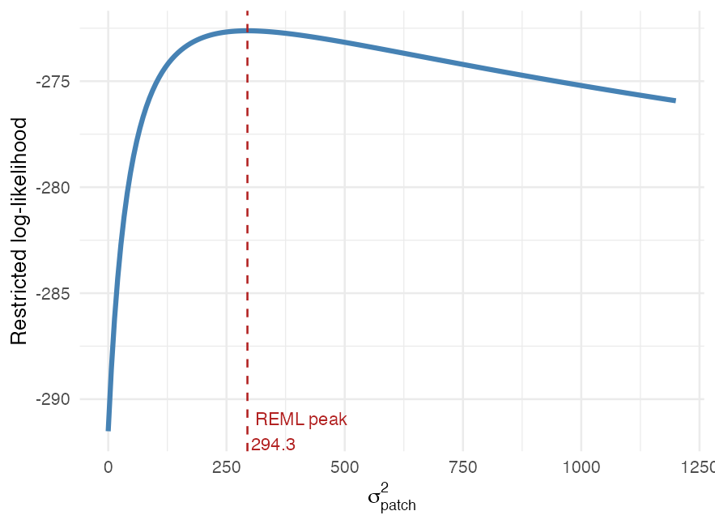
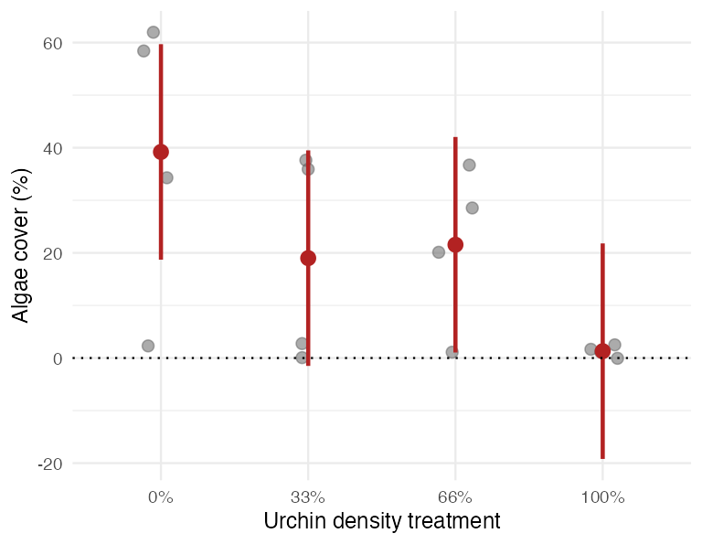

## # A tibble: 4 × 4
## treat patch quad algae
## <fct> <fct> <dbl> <dbl>
## 1 100% 1 1 0
## 2 100% 1 2 0
## 3 100% 1 3 0
## 4 100% 1 4 6Lecture: Linear Mixed Models
Random effects for nested and hierarchical data
Bill Perry
Where We Left Off
Covered last time — generalized linear models:
- The three elements of a GLM — distribution, predictors, link
- Poisson and negative binomial for counts; overdispersion
- Logistic regression and the odds ratio
Covered in week 9 — nested ANOVA, the traditional way:
- Factorial vs. nested designs, and variance partitioning
- Fixed vs. random effects — B nested in A
- The naive (wrong) factorial model vs.
aov(..., Error(...))
Note
✅ Key idea we are building on
patch nested in treat needs the right error term — MSpatch(treat), not MSresid — or the F-test for treatment is wrong.
Last week changed the distribution; this week changes the error structure. Put both together and you get glmer().
Tip
🖐 Notice
Same sea urchin dataset as week 9 — same question, same data, a different and far more flexible way to fit the model.
Part 1 · The Sea Urchin Data, Again
Data Overview
treat — urchin density treatment (0 / 33 / 66 / 100%) patch — four patches nested inside each treatment, 16 in all quad — 5 replicate quadrats within every patch algae — % cover of filamentous algae, the response
## # A tibble: 4 × 4
## treat n mean sd
## <fct> <dbl> <dbl> <dbl>
## 1 0% 20 39.2 28.7
## 2 33% 20 19 25.7
## 3 66% 20 21.6 25.1
## 4 100% 20 1.3 3.18Note
📖 The gradient is not monotonic
39.2 → 19.0 → 21.6 → 1.3. The 33% and 66% means sit within noise of each other. That is the data, not an error — and it is part of why the treatment effect comes out non-significant.
Part 2 · Fixed, Random, and the Mixed Model
What Makes an Effect “Random”?
Ask one question: do I care about these specific levels, or are they a sample of levels I could have had?
treat |
patch |
|
|---|---|---|
| The levels are | 0/33/66/100% density | patches 1–16 |
| Chosen by | me, deliberately | whatever was there |
| Would a repeat study use the same ones? | yes | no — different patches |
| I want to estimate | each level’s mean | how much they vary |
| So it is | fixed | random |
Important
The key consequence
A fixed factor with 16 levels costs you 15 parameters. A random factor with 16 levels costs you one — a single variance, σ²patch.
That is why mixed models cope with designs aov() chokes on: they are estimating far less.
Note
📖 A useful test
If you can write a sentence a reader would care about that names a specific level — “the 100% density treatment reduced algae” — it is fixed.
If the sentence would be “patch 7 happened to be lush” — nobody cares about patch 7 in particular. Random.
Warning
⚠️ You need enough levels
Estimating a variance from fewer than ~5 levels is unreliable. With 2 or 3 groups, fit them as fixed effects instead.
We have 16 patches — comfortably enough.
Reading the Random-Effects Formula
Read every random term as
\[(\ \text{what varies}\ \mid\ \text{across what}\ )\]
(1|patch)— the1means the intercept. Each patch gets its own baseline algae cover.(1|treat:patch)— the same thing, just naming the group as the treatment-patch combination. Still intercept-only.(1 + depth|patch)— this is a random slope: each patch gets its own intercept and its own slope fordepth.
Warning
⚠️ (1|treat:patch) is not a random slope
Anything of the form (1|...) is random intercepts only — the 1 is the intercept. What changes between (1|patch) and (1|treat:patch) is the grouping variable, not what varies within it.
Here they are the identical model, because patch IDs are already unique (1–16) and each patch sits in one treatment. We will use (1|patch).
Tip
🖐 The rule
You only have a random slope when something other than 1 appears on the left of the |.
Fitting It
The model in words:
\[algae_{ijk} = \mu + \alpha_i + b_{j(i)} + \epsilon_{ijk}\]
- \(\mu\) — the overall mean
- \(\alpha_i\) — the fixed effect of treatment i
- \(b_{j(i)}\) — the random effect of patch j in treatment i, \(b \sim N(0,\ \sigma^2_{patch})\)
- \(\epsilon_{ijk}\) — the residual for quadrat k, \(\epsilon \sim N(0,\ \sigma^2_{within})\)
Important
Notice what the model estimates for patch: not 16 numbers, one number — the variance those 16 patches were drawn from.
Part 3 · Testing the Fixed Effect
Two Tests, Two Answers
Anova(u_lmer_model, type = 3,
test.statistic = "F")
## Analysis of Deviance Table (Type III Wald F tests with Kenward-Roger df)
##
## Response: algae
## F Df Df.res Pr(>F)
## (Intercept) 18.5551 1 12 0.001018 **
## treat 2.7171 3 12 0.091262 .
## ---
## Signif. codes: 0 '***' 0.001 '**' 0.01 '*' 0.05 '.' 0.1 ' ' 1Anova(u_lmer_model, type = 3,
test.statistic = "Chisq")
## Analysis of Deviance Table (Type III Wald chisquare tests)
##
## Response: algae
## Chisq Df Pr(>Chisq)
## (Intercept) 18.5551 1 0.00001651 ***
## treat 8.1513 3 0.04299 *
## ---
## Signif. codes: 0 '***' 0.001 '**' 0.01 '*' 0.05 '.' 0.1 ' ' 1The F-test (Kenward-Roger denominator df)
- Accounts for the uncertainty in the estimated variance components
- More conservative, better at small n
- Here: F3,12 = 2.72, p = 0.091
The Wald χ²
- Assumes the variance components are known, not estimated
- Assumes infinite denominator df, i.e. a large sample
- Here: χ²3 = 8.15, p = 0.043
χ² = F × numerator df = 2.717 × 3 = 8.15. The only difference is what goes on the bottom.
Same Model, Same Data, Opposite Conclusions
| Test | Statistic | p | Verdict at α = 0.05 |
|---|---|---|---|
| F, Kenward-Roger df | F3,12 = 2.72 | 0.091 | not significant |
| F, Satterthwaite df | F3,12 = 2.72 | 0.091 | not significant |
| Wald χ² | χ²3 = 8.15 | 0.043 | significant |
Rule of thumb. Under ~100 observations or fewer than ~20 random-effect levels, use the F-test. Over ~500 observations and more than ~50 levels, χ² is fine. In between, the F-test is safer.
We have 80 observations and 16 patches. The rule picks the F-test.
Important
⚠️ Report the F-test — and say which df you used
The χ² is being over-confident. It pretends it knows σ²patch and σ²within exactly, when they were estimated from 16 patches.
The F-test agrees with week 9’s aov(Error(patch)) to four decimal places, because it is the same test.
Warning
🖐 The uncomfortable part
Run only the χ² and you report a significant effect and never know. When two defensible analyses straddle α = 0.05, say so and justify the choice — do not pick one and delete the other.
Part 4 · How the Variance Actually Gets Estimated
The Question This Part Answers
For three weeks, every answer came from one move: take the total sum of squares, cut it into pieces by source, divide each piece by its df to get a mean square, and form a ratio.
\[SS_{total} = SS_{treat} + SS_{patch(treat)} + SS_{within}\]
lmer() printed σ²patch = 294.3 and never showed you a sum of squares anywhere.
Important
So where did that number come from, and why is it not an SS table?
The rest of this part is the answer. It is the single biggest conceptual change between week 9 and today — bigger than the notation, bigger than the p-value.
The Old Route — Sums of Squares and Expected Mean Squares
Week 9’s table, one more time:
Statistical theory tells you what each mean square estimates on average — its expected mean square:
\[E[MS_{within}] = \sigma^2_{within}\] \[E[MS_{patch}] = \sigma^2_{within} + n\,\sigma^2_{patch}\]
Now set the observed equal to the expected and solve. That is all the old method is — two equations, two unknowns, no statistics at all past this point:
\[\hat\sigma^2_{within} = MS_{within}\] \[\hat\sigma^2_{patch} = \frac{MS_{patch} - MS_{within}}{n}\]
This is the method of moments. It is arithmetic on a table.
The New Route — Write Down the Variance and Search for It
A mixed model never builds that table. It writes the variance of the whole response vector in one matrix:
\[\mathbf{V} = \sigma^2_{patch}\,\mathbf{ZZ}^\top + \sigma^2_{within}\,\mathbf{I}\]
- \(\mathbf{Z}\) says which patch each quadrat belongs to
- \(\mathbf{ZZ}^\top\) is 1 for any two quadrats in the same patch, 0 otherwise
- So \(\mathbf{V}\) states, directly, that two quadrats in a patch are correlated and two in different patches are not
Then it asks a completely different question:
Which pair of numbers (σ²patch, σ²within) makes the data I actually observed most likely?
Important
That is the whole switch.
Old: partition a quantity you computed (SS), then solve an algebraic identity for the variances.
New: propose a pair of variances, ask how probable the data are under them, and keep searching until that probability stops improving.
No decomposition. No table. A search over a likelihood surface.
The F-ratio idea does not disappear — it comes back at the end, when you test the fixed effect. But it is no longer how the variances are obtained.
The Restricted Likelihood, Written Out
Eight lines, no lme4. This is literally what the optimizer is doing:
y <- u_df$algae
X <- model.matrix(~ treat, u_df) # fixed effects
Z <- model.matrix(~ 0 + patch, u_df) # grouping
ZZt <- Z %*% t(Z)
reml_ll <- function(v_patch, v_within) {
V <- v_patch * ZZt + v_within * diag(nrow(X))
Vi <- solve(V)
A <- t(X) %*% Vi %*% X
b <- solve(A, t(X) %*% Vi %*% y) # GLS fixed effects
r <- y - X %*% b
-0.5 * as.numeric(determinant(V, log = TRUE)$modulus +
determinant(A, log = TRUE)$modulus +
t(r) %*% Vi %*% r)
}Three pieces, each doing one job:
- \(\log|\mathbf{V}|\) — penalises making the variances big, since a bigger variance spreads probability thinner
- \(\mathbf{r}^\top\mathbf{V}^{-1}\mathbf{r}\) — penalises leaving big residuals, which pushes the variances up
- \(\log|\mathbf{X}^\top\mathbf{V}^{-1}\mathbf{X}|\) — the restricted part, the correction for having estimated the fixed effects
The answer is the pair where those forces balance.
The Surface the Optimizer Climbs

Slice the surface at σ²within = 298.6 and you can see the whole method: the optimizer walks uphill until the slope is flat.
Warning
⚠️ Look how flat that peak is
Everything from roughly 150 to 600 sits within about one log-likelihood unit of the peak. Variance components are badly determined with only 16 groups — and that uncertainty is exactly what the Kenward-Roger F-test accounts for and the Wald χ² ignores.
This plot is the reason those two tests disagreed.
Both Routes, One Number
# route 1: moments, from the SS table
moments <- (MS_patch - MS_within) / n
# route 2: maximise the restricted likelihood
fit <- optim(c(200, 300),
\(p) -reml_ll(p[1], p[2]),
method = "L-BFGS-B",
lower = c(0, 1e-6))
# route 3: what lmer() reports
lmer_vc <- as.data.frame(
VarCorr(u_lmer_model))$vcov[1]
round(c(moments = moments,
likelihood = fit$par[1],
lmer = lmer_vc), 3)
## moments likelihood lmer
## 294.313 294.312 294.313Important
294.31, three ways.
They agree to within 0.001 — and the first two have nothing in common methodologically. One is algebra on a table of sums of squares; the other is a numerical search over a likelihood surface.
On a balanced design the restricted maximum-likelihood solution has a closed form, and that closed form is the moment estimator.
So week 9 was never wrong. It was a special case that happens to have a shortcut — and you have been using the shortcut without being told it was one.
Next slide: what happens when the shortcut stops existing.
Where the Two Routes Part Company
1. The moment estimator can return a negative variance.
\(MS_{patch} < MS_{within}\) is perfectly possible by chance, and then \((MS_{patch}-MS_{within})/n\) is below zero — an impossible value for a variance.
## moments REML
## -1.634 0.000REML cannot go below zero — the likelihood is only defined for non-negative variances — so it stops at the boundary and warns “boundary (singular) fit”.
2. Unbalanced data has no single n to divide by.
Thin four patches to one quadrat each, as a storm would:
## moments, n = 5 moments, n0 = 3.95 REML
## 198.2 250.9 256.7Important
Three answers, and the moment estimator needs you to choose an effective n before it will give one at all. REML never asks — the likelihood already knows how many quadrats each patch has.
This is why mixed models replaced Error().
Why REML and Not Plain ML
Plain maximum likelihood estimates σ²patch as 205.8. REML gets 294.3. ML is biased 30% low.
You have met this bias before, in week 2.
\[s^2 = \frac{\sum(y-\bar y)^2}{n-\mathbf{1}} \quad\text{not}\quad \frac{\sum(y-\bar y)^2}{n}\]
Dividing by n under-estimates the variance because you spent one df estimating \(\bar y\). ML makes exactly that mistake, at scale: it estimates the four treatment means and then behaves as though they were known all along.
Important
REML = “restricted”: it maximises the likelihood of the data after the fixed effects have been projected out — the \(\log|\mathbf{X}^\top\mathbf{V}^{-1}\mathbf{X}|\) term three slides back. That term is the \(n-1\) correction, generalised.
Use REML for variance components. Switch to ML only to compare models with different fixed effects.
Part 4 — The Short Version
| Nested ANOVA (week 9) | Mixed model (today) | |
|---|---|---|
| Starts from | the total sum of squares | the variance matrix \(\mathbf{V}\) |
| Core move | partition SS by source | search for the most likely variances |
| Variance components from | solving \(E[MS]\) equations | maximising the restricted likelihood |
| Needs balance? | yes, for exact tests | no |
| Negative variance | can happen, is meaningless | impossible — stops at 0 |
| Unbalanced n | you must pick an effective n | handled automatically |
| On this dataset | σ²patch = 294.31 | σ²patch = 294.31 |
Note
✅ The one sentence
Sums of squares divide up variation that has already been computed; likelihood proposes variances and asks how well they explain the data. On a balanced design the two land on the same number — everywhere else, only the second one still works.
Part 5 · What the Random Effect Buys You
The Intraclass Correlation
The ICC is the share of variance living between groups — equivalently, how strongly two quadrats in the same patch resemble each other.
Important
ICC = 0.50 is the whole reason we are here
Two quadrats from the same patch are half-correlated. They are not two independent observations.
An ICC near 0 would mean patches barely matter and ordinary ANOVA would have been fine. An ICC of 0.50 means ignoring patch would have been badly wrong — and week 9’s naive model showed exactly how wrong (F = 16.1 instead of 2.7).
Tip
🖐 Use it to design the next study
With ICC = 0.50, a sixth quadrat in an existing patch buys you almost nothing. A new patch buys you a lot. The p-value could never have told you that.
Partial Pooling — What Happens to Each Patch
A random effect does not just adjust the p-value. It changes each patch’s estimate.

Note
📖 New word: shrinkage
Every patch estimate is pulled toward its treatment mean. The model treats an extreme patch average as partly real signal and partly luck, and splits the difference.
Patches with fewer quadrats, or more internal scatter, get pulled further.
Tip
🖐 Why this is a feature
A patch whose 5 quadrats happened to land high is probably not that extreme — the next 5 would come back closer to average.
This is partial pooling: between treating every patch as unrelated and pretending they are all identical.
Reporting the Variance Components
Note
How to report this result
“Algal cover did not differ significantly among urchin density treatments (linear mixed model with patch as a random effect, F3,12 = 2.72, p = 0.091, Kenward-Roger denominator df). Among-patch variance was substantial (σ²patch = 294.3 vs σ²within = 298.6, ICC = 0.50), indicating strong spatial heterogeneity in algal cover.”
Both halves belong in the sentence. The fixed effect answers did the treatment do anything; the variance component answers how noisy is this reef, which is what the next person planning a study needs.
Important
⚠️ “Not significant” is not “no effect”
With σ²patch ≈ σ²within, patch-to-patch variation is as large as quadrat-to-quadrat variation. Four patches per treatment simply cannot resolve a treatment effect against that much background noise.
The honest conclusion is “this design could not detect it”, not “urchins do not affect algae.”
Tip
🖐 Where 294.3 came from
By hand from mean squares, from aov(Error(patch)), and from VarCorr() — three notations, one model. See Part 4.
Part 6 · Post-Hoc, Assumptions, and Reporting
Estimated Marginal Means
Every standard error is 9.41 — identical across treatments, because the design is balanced and the SE comes from the patch stratum (4 patches per treatment), not from the 20 quadrats.
Warning
⚠️ Two of these intervals go below zero
Algae cover is a percentage. It cannot be negative.
The mixed model fixed the error structure and left the distribution alone — it still assumes normal, unbounded response. Last week you fixed the distribution and left the error structure alone. Real data often needs both: that is glmer().
Post-Hoc Comparisons
## treat emmean SE df lower.CL upper.CL .group
## 100% 1.3 9.41 12 -19.20 21.8 a
## 33% 19.0 9.41 12 -1.50 39.5 a
## 66% 21.6 9.41 12 1.05 42.0 a
## 0% 39.2 9.41 12 18.70 59.7 a
##
## Degrees-of-freedom method: kenward-roger
## Confidence level used: 0.95
## P value adjustment: tukey method for comparing a family of 4 estimates
## significance level used: alpha = 0.05
## NOTE: If two or more means share the same grouping symbol,
## then we cannot show them to be different.
## But we also did not show them to be the same.Important
Every treatment shares the letter a.
No pair is distinguishable. That is the correct and expected result — the omnibus F-test was already non-significant (p = 0.091), so there was nothing for a post-hoc to find.
Running post-hocs after a non-significant omnibus test is exploratory only. Report it as such, or not at all.
Note
📖 Read the pattern, not a ranking
The means run 39.2 → 19.0 → 21.6 → 1.3. The two middle treatments are effectively tied, so this is not a clean monotonic gradient. Resist the temptation to write one.
Diagnostics

Warning
⚠️ The spread is not constant
It is tightest at the lowest fitted values and widens from there — the same heteroscedasticity the raw data showed. A mixed model fixes correlation, not unequal variance.
Tip
🖐 Use the right tool
plot() and qqnorm() were built for lm() objects. They mostly work on an lmer() fit, but DHARMa simulates from the fitted model and is the purpose-built check — that is what the activity uses.
A mixed model also assumes the random effects are normal. With 16 patches you cannot check that honestly. Say so.
Heterogeneity of Variance
Warning
⚠️ This test ignores patch
leveneTest() has no idea the quadrats are grouped. It is testing the 80 raw values as if they were independent — the very assumption this whole lecture exists to fix. Read it as a description of the raw spread, not as a test of the mixed model.
The model’s own diagnostic is the residuals-vs-fitted plot, and DHARMa.
Variances really are unequal (the 100% treatment has SD 3.2, the 0% treatment 28.7). Quinn & Keough noted the same thing, tried transformations including arcsine, and found none that fixed it — so they analysed the untransformed data and said so. A balanced ANOVA is reasonably robust to this. Say it out loud in the methods rather than hoping nobody checks.
Visualization


Grey — the 16 patch means. Red — the model’s treatment means and 95% intervals. The grey scatter within each treatment is σ²patch; it is why the red intervals are so wide.
Part 7 · Wrap-Up
The lmer Formula Cheat-Sheet
Read every random term as ( what varies | across what ).
| Formula | Meaning |
|---|---|
y ~ x + (1|g) |
random intercept per group |
y ~ x + (1 + x|g) |
random intercept and slope |
y ~ x + (0 + x|g) |
random slope only, shared intercept |
y ~ x + (1|a) + (1|b) |
two crossed random factors |
y ~ x + (1|a/b) |
b nested in a — shorthand for (1|a) + (1|a:b) |
Important
⚠️ The confusion to avoid
(1|patch) and (1|treat:patch) are both random-intercept models. The 1 is the intercept; what differs is only the grouping.
Tip
🖐 Do I need a/b here?
Only if the inner IDs restart inside each outer level (patch 1,2,3,4 in every treatment). Then R cannot tell nesting from crossing and you must write (1|treat/patch).
Our patches are numbered 1–16 across the whole study, so (1|patch) already says it.
Warning
⚠️ “boundary (singular) fit”
A variance was estimated as exactly 0 — the likelihood hit the edge of what a variance is allowed to be. It is the REML version of the moment estimator going negative (Part 4).
Simplify the random effects; do not ignore it.
Wrap-up
Today you:
- Decided fixed vs random by asking whether you care about these levels or about how much they vary
- Learned a random factor costs one parameter where a fixed one costs k − 1
- Read
(1|group)correctly, and saw it is not a random slope - Chose between the F-test (p = 0.091) and the Wald χ² (p = 0.043) — and learned why the F-test is right at 16 groups
- Saw where the variance components come from: a search over a restricted likelihood, not a partition of sums of squares
- Got ICC = 0.50, and saw partial pooling shrink each patch estimate toward its treatment mean
Important
✅ The one idea to keep
A mixed model does not “remove” the patch effect — it estimates it, and tests the treatment against the right amount of noise.
The old way partitioned variation that was already computed. The new way proposes variances and keeps the ones that make the data most likely. On a balanced design they agree exactly; everywhere else only the second still works.
Note
📖 Up next
glmer() — a non-normal response and a random effect. You now have both halves.
Before Next Class
Take the pine needle data, collapsed to one value per team per side (the two-stage summary from Week 3):
Compare F to the square of the paired-t statistic from Week 4 (t = −2.72). You should get F = 7.41, df 1 and 3, p = 0.072 — the paired t-test is this mixed model.
Tip
🚀 If you finish early
Run the same formula on the raw 64 needles instead. You get p = 0.057 and 59 denominator df, not 3.
What changed? Check VarCorr() — one variance is estimated as exactly zero and R warns “singular fit”.
You now know what that means: the likelihood walked to the edge of the parameter space, exactly as the moment estimator would have gone negative.
Readings
- Gotelli & Ellison, Ch. 10 — The Analysis of Variance, for the random-effects and variance-component material this lecture rebuilds.
- Quinn & Keough (2002), Experimental Design and Data Analysis for Biologists, Ch. 9 §9.1 — nested designs and expected mean squares. This is the source of today’s worked example.
- Zuur, A. F., Ieno, E. N., Walker, N. J., Saveliev, A. A., & Smith, G. M. (2009). Mixed Effects Models and Extensions in Ecology with R. Springer. Ch. 5 is the standard ecological treatment of REML.
- Bates, D., Mächler, M., Bolker, B., & Walker, S. (2015). Fitting linear mixed-effects models using lme4. Journal of Statistical Software, 67(1), 1–48.
Note
📖 On the dataset
The sea urchin grazing data are Andrew & Underwood’s, as analysed in Quinn & Keough Ch. 9 — the same file as week 9. The textbook PDFs are on Canvas.
Tip
🖐 Why no Whitlock & Schluter
W&S does not cover mixed models or random effects. For this topic, Gotelli, Quinn & Keough, and Zuur are the references.